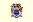
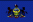

| Circuit | Date | Type | Winner | |
| Phoenix | 9 April | Paved Oval |
#6 - M.Andretti (Newman/Haas - Lola-Chevrolet) | |
| Long Beach | 16 April | Street Circuit |
#3 - A.Unser Jr. (Galles - March-Chevrolet) | |
| Indianapolis | 28 May | Paved Oval |
#5 - R.Mears (Penske - Penske-Chevrolet) | |
| Milwaukee | 4 June | Paved Oval |
#5 - R.Mears (Penske - Penske-Chevrolet) | |
| Portland | 19 June | Road Course |
#9 - D.Sullivan (Penske - Penske-Chevrolet) | |
| Cleveland | 3 July | Airport Course |
#6 - M.Andretti (Newman/Haas - Lola-Chevrolet) | |
| Toronto | 17 July | Street Circuit |
#3 - A.Unser Jr. (Galles - March-Chevrolet) | |
|  | Meadowlands | 24 July | Street Circuit |
#3 - A.Unser Jr. (Galles - March-Chevrolet) |
| Brooklyn | 7 August | Paved Oval |
#9 - D.Sullivan (Penske - Penske-Chevrolet) | |
|  | Pocono | 21 August | Paved Oval |
#1 - B.Rahal (Truesports - Lola-Judd) |
| Mid-Ohio | 4 September | Road Course |
#20 - E.Fittipaldi (Patrick Racing - Lola-Chevrolet) | |
| Elkhart Lake | 11 September | Road Course |
#20 - E.Fittipaldi (Patrick Racing - Lola-Chevrolet) | |
| Nazareth | 25 September | Paved Oval |
#9 - D.Sullivan (Penske - Penske-Chevrolet) | |
| Laguna Seca | 16 October | Road Course |
#9 - D.Sullivan (Penske - Penske-Chevrolet) | |
| Tamiami Park | 6 November | Parkland Circuit |
#3 - A.Unser Jr. (Galles - March-Chevrolet) |